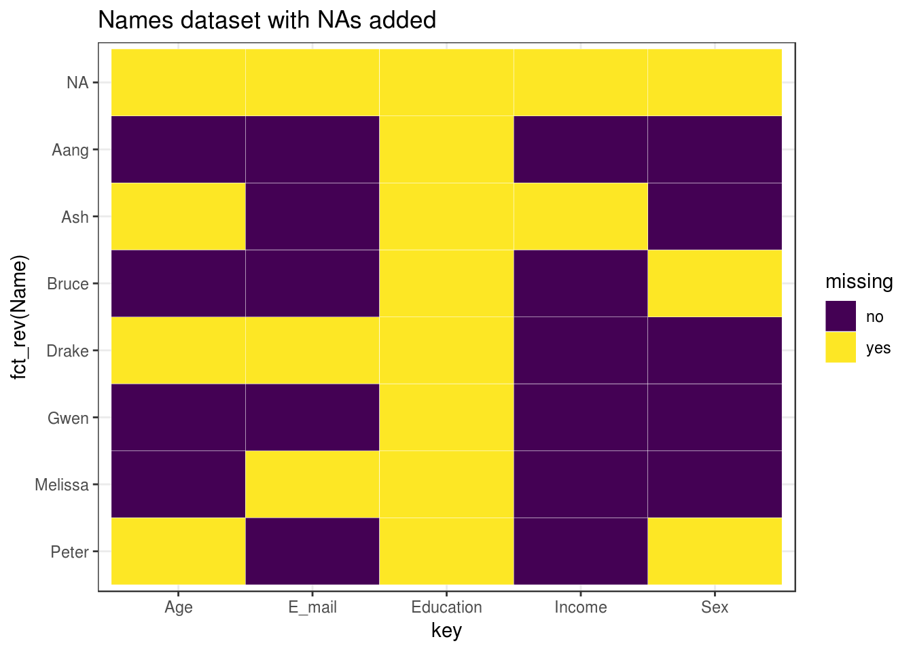
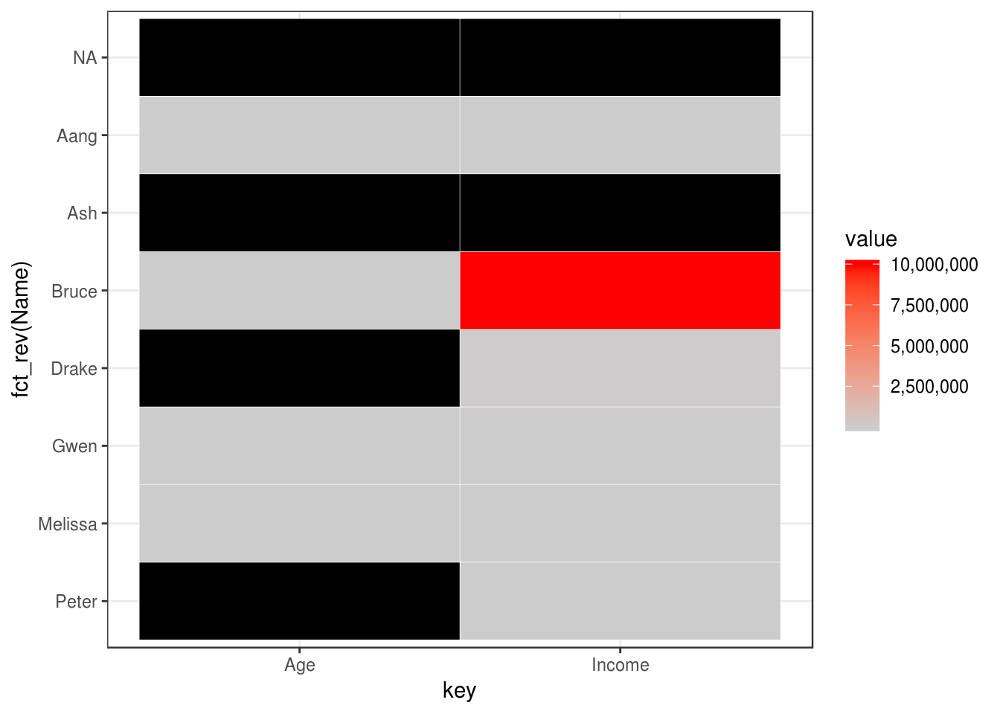
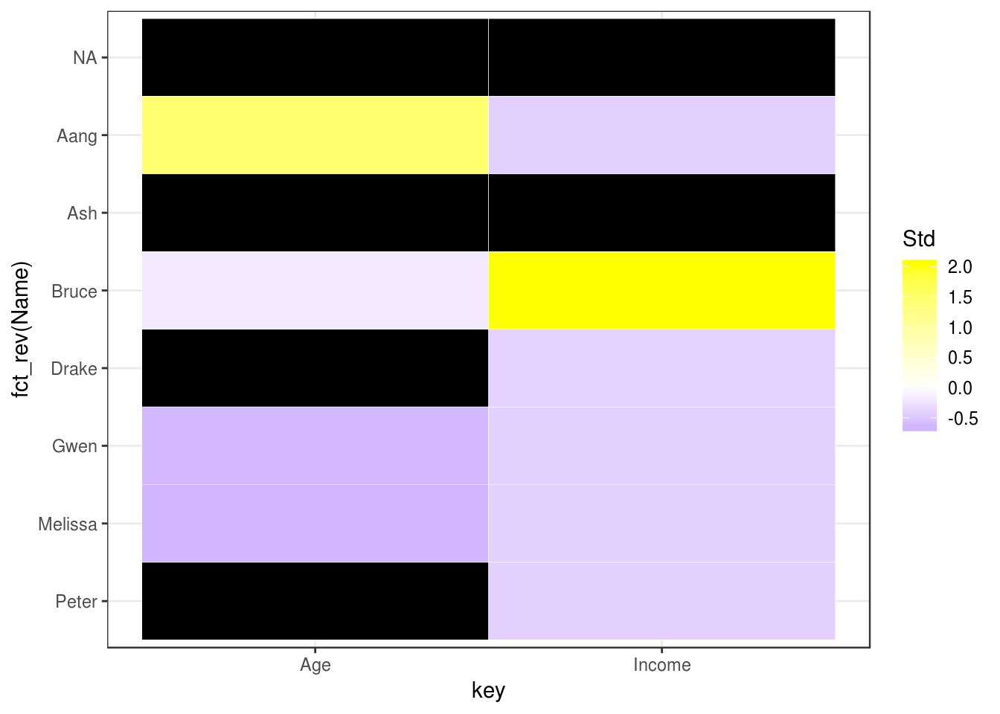
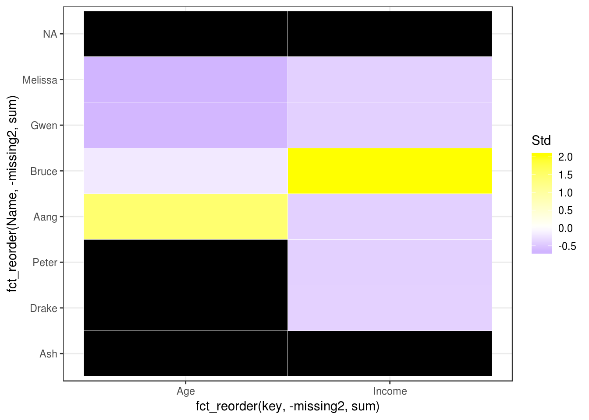
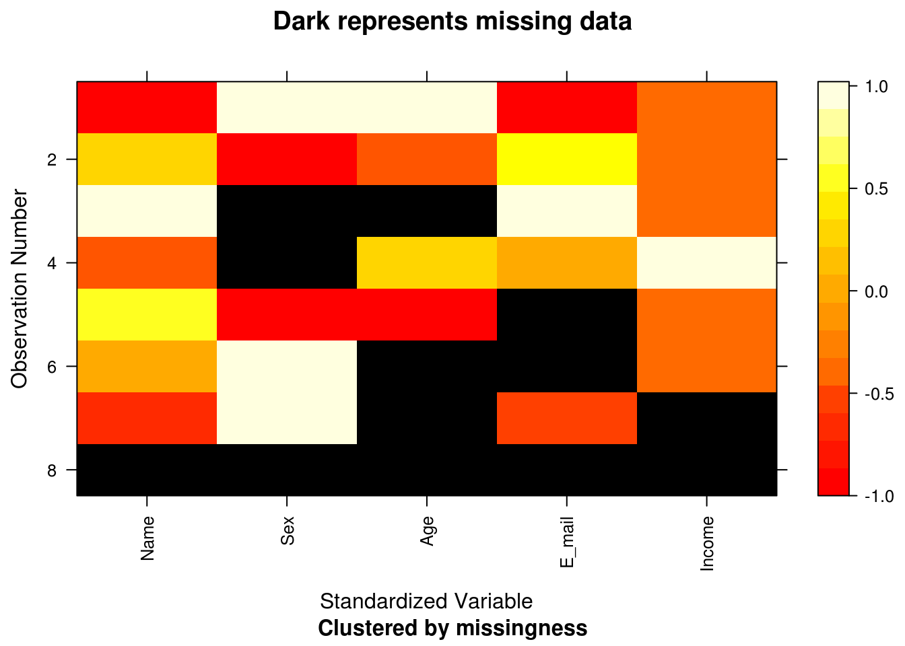
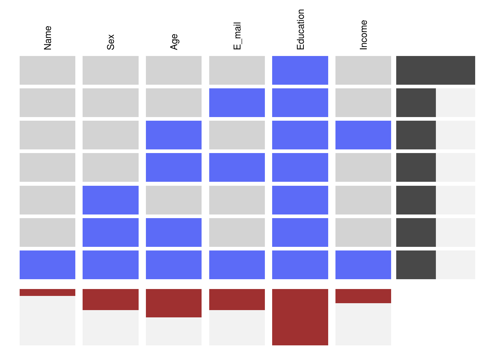
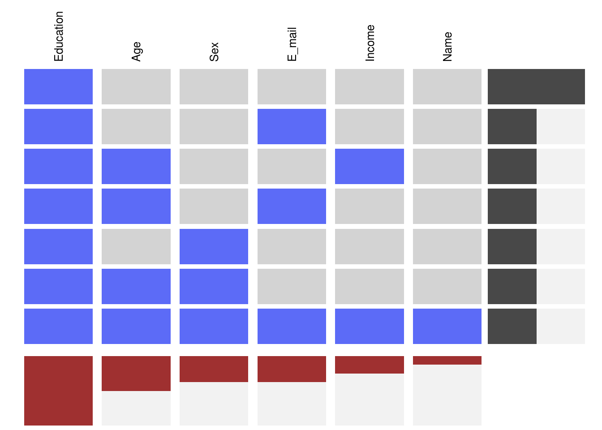

13 Missing Data
 This chapter originated as a community contribution created by ujjwal95
This chapter originated as a community contribution created by ujjwal95
This page is a work in progress. We appreciate any input you may have. If you would like to help improve this page, consider contributing to our repo.
13.1 Overview
This section covers what kinds of missing values are encountered in data and how to handle them.
13.2 tl;dr
It’s difficult to handle missing data! If your data has some missing values, which it most likely will, you can either remove such rows, such columns, or impute them.
13.3 What are NAs?
Whenever data in some row or column in your data is missing, it comes up as NA. Let’s have a look at some data, shall we?
| Name | Sex | Age | E_mail | Education | Income |
|---|---|---|---|---|---|
| Melissa | Female | 27 | NA | NA | 1.0e+04 |
| Peter | NA | NA | peter.parker@esu.edu | NA | 7.5e+03 |
| Aang | Male | 110 | aang@avatars.com | NA | 1.0e+03 |
| Drake | Male | NA | NA | NA | 5.0e+04 |
| Bruce | NA | 45 | bruce.wayne@wayne.org | NA | 1.0e+07 |
| Gwen | Female | 28 | gwen.stacy@esu.edu | NA | 2.3e+04 |
| Ash | Male | NA | ash.ketchum@pokemon.com | NA | NA |
| NA | NA | NA | NA | NA | NA |
We can see the number of NAs in each column and row:
colSums(is.na(data))## Name Sex Age E_mail Education Income
## 1 3 4 3 8 2rowSums(is.na(data))## [1] 2 3 1 3 2 1 3 6We can also see the ratio of the number of NAs in each column and row:
colMeans(is.na(data))## Name Sex Age E_mail Education Income
## 0.125 0.375 0.500 0.375 1.000 0.250rowMeans(is.na(data))## [1] 0.3333333 0.5000000 0.1666667 0.5000000 0.3333333 0.1666667 0.5000000
## [8] 1.000000013.4 Types of Missing Data
Missing Completely at Random (MCAR): These are missing data values which are not related to any missing or non-missing values in other columns in the data.
Missing at Random (MAR): These are missing data which are linked to one or more groups in the data. The great thing about MAR is that MAR values can be predicted using other features. For example, it may be observed that people older than 70 generally do not enter their income. Most of the data we encounter is MAR.
Missing Not at Random (MNAR): Generally, data which is not MAR is MNAR. A big problem is that there is not a huge distinction between MAR and MNAR. We generally assume MAR, unless otherwise known by an outside source.
13.5 Missing Patterns
13.5.1 Missing Patterns by columns
We can see some missing patterns in data by columns,
ggplot(tidy_names, aes(x = key, y = fct_rev(Name), fill = missing)) +
geom_tile(color = "white") +
ggtitle("Names dataset with NAs added") +
scale_fill_viridis_d() +
theme_bw()
And we can also add a scale to check the numerical values available in the dataset and look for any trends:
library(scales) # for legend
# Select columns having numeric values
numeric_col_names <- colnames(select_if(data, is.numeric))
filtered_for_numeric <- tidy_names[tidy_names$key %in% numeric_col_names,]
filtered_for_numeric$value <- as.integer(filtered_for_numeric$value)
# Use label=comma to remove scientific notation
ggplot(data = filtered_for_numeric, aes(x = key, y = fct_rev(Name), fill = value)) +
geom_tile(color = "white") +
scale_fill_gradient(low = "grey80", high = "red", na.value = "black", label=comma) +
theme_bw()
Can you see the problem with the above graph? Notice that the scale is for all the variables, hence it cannot show the variable level differences! To solve this problem, we can standardize the variables:
filtered_for_numeric <- filtered_for_numeric %>%
group_by(key) %>%
mutate(Std = (value-mean(value, na.rm = TRUE))/sd(value, na.rm = TRUE)) %>%
ungroup()
ggplot(filtered_for_numeric, aes(x = key, y = fct_rev(Name), fill = Std)) +
geom_tile(color = "white") +
scale_fill_gradient2(low = "blue", mid = "white", high ="yellow", na.value = "black") + theme_bw()
Now, we can see the missing trends better! Let us sort them by the number missing by each row and column:
# convert missing to numeric so it can be summed up
filtered_for_numeric <- filtered_for_numeric %>%
mutate(missing2 = ifelse(missing == "yes", 1, 0))
ggplot(filtered_for_numeric, aes(x = fct_reorder(key, -missing2, sum), y = fct_reorder(Name, -missing2, sum), fill = Std)) +
geom_tile(color = "white") +
scale_fill_gradient2(low = "blue", mid = "white", high ="yellow", na.value = "black") + theme_bw()
13.5.2 Missing Patterns by rows
We can also see missing patterns in data by rows using the mi package:
library(mi)
x <- missing_data.frame(data)## Warning in .guess_type(y, favor_ordered, favor_positive, threshold,
## variable_name): Education : cannot infer variable type when all values are
## NA, guessing 'irrelevant'## NOTE: In the following pairs of variables, the missingness pattern of the second is a subset of the first.
## Please verify whether they are in fact logically distinct variables.
## [,1] [,2]
## [1,] "Age" "Income"
## [2,] "Education" "Income"## Warning in .local(.Object, ...): Some observations are missing on all included variables.
## Often, this indicates a more complicated model is needed for this missingness mechanismimage(x)
Did you notice that the Education variable has been skipped? That is because the whole column is missing.
Let us try to see some patterns in the missing data:
x@patterns## [1] E_mail Sex, Age
## [3] nothing Age, E_mail
## [5] Sex nothing
## [7] Age, Income Name, Sex, Age, E_mail, Income
## 7 Levels: nothing E_mail Sex Sex, Age Age, E_mail ... Name, Sex, Age, E_mail, Incomelevels(x@patterns)## [1] "nothing" "E_mail"
## [3] "Sex" "Sex, Age"
## [5] "Age, E_mail" "Age, Income"
## [7] "Name, Sex, Age, E_mail, Income"summary(x@patterns)## nothing E_mail
## 2 1
## Sex Sex, Age
## 1 1
## Age, E_mail Age, Income
## 1 1
## Name, Sex, Age, E_mail, Income
## 1We can visualize missing patterns using the visna (VISualize NA) function in the extracat package:
extracat::visna(data)
Here, the rows represent a missing pattern and the columns represent the column level missing values. The advantage of this graph is that it shows you only the missing patterns available in the data, not all the possible combinations of data (which will be 2^6 = 64), so that you can focus on the pattern in the data itself.
We can sort the graph by most to least common missing pattern (i.e., by row):
extracat::visna(data, sort = "r")
Or, by most to least missing values (i.e., by column):
extracat::visna(data, sort = "c")
Or, by both row and column sort:
extracat::visna(data, sort = "b")
13.6 Handling Missing values
There are multiple methods to deal with missing values.
13.6.1 Deletion of rows containing NAs
Often we would delete rows that contain NAs when we are handling Missing Completely at Random data. We can delete the rows having NAs as below:
na.omit(data)## [1] Name Sex Age E_mail Education Income
## <0 rows> (or 0-length row.names)This method is called list-wise deletion. It removes all the rows having NAs. But we can see that the Education column is only NAs, so we can remove that column itself:
edu_data <- data[, !(colnames(data) %in% c("Education"))]
na.omit(edu_data)## Name Sex Age E_mail Income
## 3 Aang Male 110 aang@avatars.com 1000
## 6 Gwen Female 28 gwen.stacy@esu.edu 23000Another method is pair-wise deletion, in which only the rows having missing values in the variable of interest are removed.
13.6.2 Imputation Techniques
Imputation means to replace missing data with substituted values. These techniques are generally used with MAR data.
13.6.2.1 Mean/Median/Mode Imputation
We can replace missing data in continuous variables with their mean/median and missing data in discrete/categorical variables with their mode.
Either we can replace all the values in the missing variable directly, for example, if “Income” has a median of 15000, we can replace all the missing values in “Income” with 15000, in a technique known as Generalized Imputation.
Or, we can replace all values on a similar case basis. For example, we notice that the income of people with Age > 60 is much less than those with Age < 60, on average, and hence we calculate the median income of each Age group separately, and impute values separately for each group.
The problem with these methods is that they disturb the underlying distribution of the data.
13.6.3 Model Imputation
There are several model based approaches for imputation of data, and several packages, like mice, Hmisc, and Amelia II, which deal with this.
For more info, checkout this blog on DataScience+ about imputing missing data with the R mice package.
13.7 External Resources
- Missing Data Imputation - A PDF by the Stats Department at Columbia University regarding Missing-data Imputation
- How to deal with missing data in R - A 2 min read blogpost in missing data handling in R
- Imputing Missing Data in R; MICE package - A 9 min read on how to use the
micepackage to impute missing values in R - How to Handle Missing Data - A great blogpost on how to handle missing data.
with